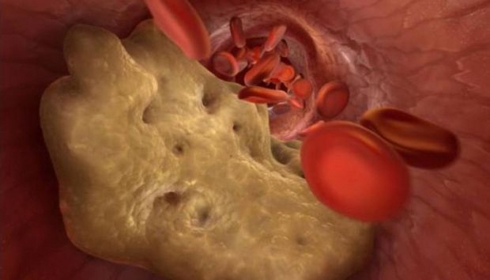

Харесва ми


Харесано от 18 889 души
Подуване, болка и мускулни спазми са 3 често срещани спътника.
Как да ги лекуваме у дома? Кой е най-големият враг на холестерола и кръвните съсиреци и най-добрият приятел на кръвоносните съдове? Ексклузивно интервю с легендарен човек, който направи чудо!
Краката ви се подуват вечер? Глезените са подути, имат следи от чорапи по тях? Това означава, че имате излишна течност в съдовете и тази течност преминава през стените на отслабените и запушени кръвоносните съдове в тъканта. Отокът се придружава от мускулни болки и спазми, които са резултат на нарушен кръвен поток.
Всички знаят, че инсултите и сърдечните пристъпи са резултат на натрупването на холестерол в кръвоносните съдове. Това е причината за повечето сърдечно-съдовите заболявания. Въпреки това, малко хора разбират, че това е само върхът на айсберга. Запушените артерии са причина на 9 от 10 хронични заболявания, считани за неизлечими.

Главоболия и повишаване на кръвното налягане, трудности с обръщане или накланяне на шията, подуване на краката вечерта, а на лицето сутрин, шум в ушите, изтръпване на пръсти на краката, замръзващи ръце и крака, проблеми с фокусиране на зрението, влошаване на паметта, безсилие и отпадналост – мнозина смятат, че това са признаци на стареене, но това не е така.
 Защо кръвоносните съдове са отговорни за 90 процента от вашето здраве?
Защо кръвоносните съдове са отговорни за 90 процента от вашето здраве?
Освен холестерола, какво се утаява по стените на кръвоносните съдове?
4 очевидни признака не нездравословни кръвоносни съдове и още 7 скрити
Как безопасно да почистите кръвоносните съдове у дома?
Получих отговор на тези въпроси от ръководителя на отделението по съдова хирургия на Медицинския и фармакологичния университет в Букурещ, професор, неврохирург, доктор по философия. Леон Danaila
Професор Леон Данайла е извършил над 19 200 мозъчни операции. Най-младият пациент беше само на два дни.
Професор Леон Данайла има дарбата да обяснява сложните процеси с прости думи. Той е написал 68 книги и учебни помагала, които са достъпни на хората без медицинско образование. Той е убеден, че кръвоносните съдове са отговорни за 90 % от нашето здраве, и нашето благополучие зависи това, колко са чисти те.
Защо кръвоносните съдове определят 90 процента от нашето здраве?
Професоре, многократно сте казвали, че кръвоносните съдове отговарят за 90 % от здравето на организма. Защо?
Кой орган на човешкото тяло е най-големият в организма? Малко хора знаят отговора. Дори тези, които следват медицина, грешат. Някои хора споменават мозъка, черния дроб. Най-умните хора казват, че това е кожа. В действителност, това е съдовата система.
Можем да обвием планетата 2,5 пъти с

кръвоносните съдове само на един човек.
Представете си. Ако вземем и свържем всички съдове в тялото на човека, дължината им ще бъде около 100 хиляди километра.
Екваторът има дължина 40 000 километра. Следователно, можем да обвием планетата 2, 5 пъти с въже от съдовете на един човек.
Какво вие мислите за това? Кръвоносните съдове не са само тръби, пренасящи кръв. Това е уникален и сложен орган, и всяко увреждане води до негативни последици.
- Блокиране на кръвоносните съдове в краката - варикозно разширяване на вените, подуване, усещане за тежест, студ или, обратно, силно парене в краката, сухи и напукани ходила. Нарушаването на кръвния поток води до изчезването на защитата от бактерии, появява се микоза, ноктите стават чупливи.
- Блокиране на кръвоносните съдове, захранващи черния дроб - чернодробна стеатоза. При консумация на мазни храни в устата усещате горчив вкус.
- Отслабени и заблокирани кръвоносните съдове, захранващи ставите - увреждане на хрущяла. Болка в ставите, възниква остеохондроза, херния.
- Чревните съдове губят еластичност - хемороиди.
- Кръвоносни съдове в окото - зрението се влошава. Развива се катаракта. Червените очи, в които ние обвиняваме умората, всъщност са микро-кръвоизливи, пукнатини в малките капиларни съдове в окото.
- Нарушения на кръвообращението в мозъка - виене на свят, шум в ушите и загуба на паметта. Случвало ли ви се да влезете в кухнята и да забравите, от какво имате нужда? Или неспособността да си спомняте думата. Това са признаци на влошаване на състоянието на кръвоносните съдове на мозъка.
И, разбира се, хипертонията допринася за този списък. Високо кръвно налягане – майката на инсулта и сестрата на сърдечен пристъп.
Кръвоносните съдове са нашият източник на енергия, и животът тече прех тях. Ако този важен път е блокиран, животът ще спре.
Запушването на кръвоносните съдове означава глад за всички органи.
Наднорменото тегло е свързано директно с кръвоносните съдове. Кръвоносните съдове, запушени с холестерол, предизвикват глад на органи и не осигуряват необходимото количество на хранителните вещества. Мозъкът изпраща съобщение: вие трябва да ядете. И човекът яде. Но органи продължават да не получават необходимото количество на хранителните вещества поради запушени кръвоносните съдове. Мозъкът отново алармира, че вие трябва да ядете, и това се повтаря до безкрай.
Оттук и упорито чувство на глад и силното желание за сладки и мазни продукти, защото организъмът се нуждае от калории.
Когато моите колеги казват на пациентите си: «Имате високо кръвно, защото сте с наднормено тегло, те бъркат причина и следствие. Хипертонията възниква не от наднорменото тегло, а обратното.
Невъзможно е да бъдеш здрав и щастлив без здрави кръвоносни съдове.
Это защо аз през цялото време казвам: ако искате нормален живот, почистете и възстановете здравето на кръвоносните съдове. Почистването на съдовете ще ви спаси от 90 % хронични заболявания, някои от които се считат за «неизлечими».
Какво запушва кръвоносните съдове, освен холестерола?
Всички знаем, колко е опасен холестеролът. Той запушва кръвоносните съдове, изтънява ги, въздейства на кръвотока, но той не е единственният.
6,3 кг
Това е общото тегло на примеси, които се натрупват в кръвоносните съдове до 55-годишна възраст.
Холестерол
Това е истина. Холестеролът или «атеросклеротични седименти» съставляват около 65-70 % от примесите в съдовете.
На 50-годишна възраст в организма остават до 5 кг холестеролови седименти. Натрупването на холестерол стеснява диаметъра на кръвоносните съдове в четири-пет пъти.
Тези плаки не застрашават живота. Качеството на живота се влошава, повишава се кръвното налягане, появяват се главоболие, болки в гърба, слабост и апатия. Обаче, масата от кръвни съсиреци, които се натрупват в кръвоносните съдове, е много по-опасна.
ТЕГЛО НА ТРОМБИТЕ
Масата на кръвните съсиреци, натрупаните в съдовете, е много по-малка - само около 800 грама – 1 кг. Опасността им, обаче, се крие в нестабилността. Тромб (кръвен съсирек) може да се спука по всяко време и да отиде по-нататък в кръвоток.
Голям кръвен съсирек напълно блокира кръвоносен съд. Появява се исхемия – органът спира да получава необходимите вещества.
Исхемичният инсулт е запушване на кръвоносните съдове в мозъка. Сърдечният удар е запушване на коронарна артерия. Чернодробна исхемия, белодробен колапс, бъбречна недостатъчност. Хемороиди не са нещо друго, освен ректална исхемия. Запушването на малките кръвоносните съдове в краката в крайна сметка води до некроза – гангрена.
ТЕГЛО НА СОЛИ
Калциевите соли в кръвоносните съдове – това са химически остатъци от лекарствата и хранителните добавки. До 50-годишна възраст е натрупва от 300 до 400 г. Максималното количество калциеви соли се натрупва в кръвоносните съдове на мозъка. Калциевите соли са опасни поради кристалната им структура. Внезапно стесняване, предизвикано от стрес, физически натоварвания или метеорологични условия, води до съдовият спазъм в резултат на това, че остър кристал може да пробие стената на съда. Разкъсването на мозъчен съд е така нареченият хеморагичен инсулт.
4 очевидни признака на нездравословни кръвоносни съдове и още 7 скрити.
Какви симптоми сочат на това, че кръвоносните ни съдове са запушени? Как да разпознаем сигнал на тялото: спешно почистете съдовете!?
Ако сте над 45 години, и никога не сте приемали нутрицевтики за прочистване на кръвоносните съдове, уверявам ви, че имате проблем с тях.
45
възраст, след която е необходимо да бъдат почистени кръвоносните съдове
Запушването на кръвоносните съдове с холестерол и кръвни съсиреци всъщност е естествен процес на стареене. Нездравословната храна, лекарства, тютюнопушенето и алкохолът ускоряват процеса в 6-8 пъти. Това е реалността, в която ние живеем, и която не можем да отричаме.
Това е основният признак на запушените съдове.
Ако имате диагностицирана хипертония, можете да спрете да търсите симптоми, тъй като тя е кралицата на съдовите заболявания.
Имате проблеми с артериално налягане? Винаги имате високо кръвно, и трябва да приемате лекарства? Тогава вие трябва да знаете, че само 30 % от диаметъра на съдовата тръба са запазени. Останалото е под плаки от холестерол, кръвни съсиреци и калциеви соли.
Затова дори най-малкият стрес, промяната на времето, магнитните бури веднага се отразяват върху вашето здраве – кръвното налагане ви се повишава, имате силно главоболие, болки в ставите.
4 заболявания, свързани със запушените кръвоносните съдове:
- 1. Хипертония.
- Нестабилно или високо кръвно налягане, изискващо лекарства за понижаване. Имате ли диагностицирана хипертония? Съдовете чакат да бъдат почистени!
- 2. Разширени вени
- Обезобразени и подути вени на краката, усещане за тежест и болка, отоци. Остатъчен холестерол и кръвни съсиреци блокират венозните клапи. Постепенно се появяват съдови «звездички», които в крайна сметка се превръщат в съдова «мрежа». Така се развива варикозно разширение на вените.
- 3. Хемороиди.
- Запушването на кръвоносните съдове в ректума причинява възпаление на хемороидите. И седименти в кръвоносните съдове, захранващи кръвта, допринасят за аналните фисури.
- 4. Остеохондроза.
- Лоша циркулация в хрущяла. Хрущялите се втвърдяват и износват, без да имат време за възстановяване. Те не се регенерират и не изсъхват. Те губят своите амортизационни свойства. Солите на се отмиват и неконтролируемо се натрупват.
7 скрити симптома:
- 1. Оток.
- Запушените кръвоносните съдове не могат да изпомпват кръв. Метаболизъм на физиологичните разтвори е нарушен. Вечер краката се подуват толкова силно, че чорапите остават дълбоки следи по глезените. Подуване на лицето, торбички под очите. Трудности със свалянето на пръстените от пръстите. Подуването на корема е признак на отока на вътрешните органи.
- 2. Звън в ушите
- От тихи до силни звуци, затрудняващи фокусирането. Това е свързано с повишено налягане в съдовете на мозъка, въздействащо върху тъпанчетата.
- 3. Световъртеж.
- Чувството на «интоксикация», пристъпи на световъртеж предполагат, че вестибуларният апарат страда от глад. Често се придружава от загуба на слуха.
- 4. Безсъние.
- Усещате сънливост и умора, но не можете да заспите преди полунощ? Това се дължи на недостатъчен приток на кръв към хипофиза. Той повече не произвежда мелатонин, хормона на съня.
- 5. Намаляване на енергия.
- Вие усещате липса на енергия. Не сте в настроение. Вие просто искате да легнете в леглото и да ядете. Това се случва, когато организъмът започва да пести енергия. Запушените кръвоносните съдове възпрепятстват транспортирането на основните хранителни вещества до органите, и тялото минимизира активността си.
- 6. Визуални аномалии.
- Петна по очите, замъглено зрение. Симптоми на увреждане на очите.
- 7. Болки в ставите.
- Болка в ставите при промяна на времето. Сутрин, вместо да се събудиш спокойно, вие се чувствате като полупарализиран човек с увреждане, болят ви костите. Трябва ви време за облекчаване на изтръпването. Това е свързано с факта, че синовиалната течност губи свойствата си.
Имате ли поне един от тези симптоми? Вашите съдове ви казват, че имат нужда от почистване и подхранване.
Хората често имат няколко симптома в различни вариации едновременно. Или дори всички наведнъж.
Пациентите се опитват да лекуват всяко заболяване поотделно – хапчета за кръвно налягане, мехлеми за разширени вени, супозитории за хемороиди, гелове за остеохондроза, и, разбира се, обезболяващи, болкоуспокояващи, обезболяващи.
Те хвърлят огромни суми във фармацевтичната черна дупка. Но причината за всички съдови заболявания е една и съща – запушване. Трябва да започнете с общо почистване.
Какво трябва да се използва за почистване на кръвоносните съдове от холестерол, кръвни съсиреци и плаки?
Как може да помогне пациентът? Как той може да почисти кръвоносните съдове, ако не иска да отиде на лекар и да чуе присъдата: «Вие трябва да отслабнете», «вие трябва да спортувате», «вие трябва да се храните здравословно», «на възраст сте, когато това е нормално» и т. н.?
Повечето лекарства и фармацевтични препарати не помагат, а просто изпразват портфейла и предизвикват пристрастяване.
За съжаление, това е медицинската система в Румъния. Разбирам напълно нежеланието на пациента да отиде при лекар.
Аз мога само да препоръчам продукт за безопасно почистване на кръвоносните съдове - Cardiofort. Cardiofort дължава живота с 11-17 години, зарежда с енергия и подарява усещане за лекота. Ще забравите за проблемите и ще получите повече сила.
Това са 100 % натурални капки, абсолютно безопасни за организама. Ефективността на това средство може да се сравни само с хирургичното почистване на кръвоносните съдове. Но, за разлика от операцията, това не причинява усложнения и странични ефекти. За един курс тези капки интензивно пречистват цялата система на кръвообръщението на човека – от големите артерии до най-малките и крехки капиляри.
Cardiofort съдържа цял комплекс от билкови съставки: глог, жълт кантарион, хмел, хвощ, майчин кантарион, липов цвят. При вътрешна употреба на продукт, той веднага започва да действа и постепенно лекува целия оганизъм. Уникалният състав на капките премахва холестеролните плаки, тромбове в артериите и кръвните съсиреци по стените на кръвоносните съдове, както и калциевите плаки. Следователно, Cardiofort премахва стъпка по стъпка всички вредни вещества, които пречат на циркулацията на кръвта.
Токсичните вещества, натрупани с годините и отравящи живота ви, ще бъдат измити от Cardiofort само за 1,5-2 месеца лечение.
Само за 6 седмици, Cardiofort разтваря и премахва 4000 г холестеролни плаки. Разгражда около 1 кг кръвни съсиреци и извежда 350-400 г калциеви соли.
В същото време главоболието и шум в ушите изчезват. Мозъкът започва да получава достатъчно количество хранителни вещества, за да работи със скоростта на свръхкомпютър. Мислите се изясняват.
- Усещанията се засилват, започвате да чувате приятни звуци, които не сте чували преди. Слухът ви се подобрява и сега вие можете да чувате разговора от друга стая.
- Ароматите стават по-наситени. Запушването на носа, хроничният ринит и алергиите изчезват. Кашлицата изчезва, дишането става гладко и свободно. Чист въздух, който запълва белите дробове, се разпространява по тялото на приятни вълни и предизвиква чувството на лека еуфория.
- Усещането за вкус е по-силно и по-дълбоко. Дори обикновената храна носи особено удоволствие. Ви еще ядете по-малко и ще се насищате по-бързо. Прситрастяването към сладки и мазни храни ще изчезне.
- Ставите ще ви кажат «благодаря». Повече няма да усещате болки в ставите, и поради обновяването на колагена движенията ще станат по-леки. Прилича на смяна на машинно масло в колата: сменяте черната течност, съдържаща парчета метал, с прясно, прозрачно масло, осигуряващо идеално смазване.
Впечатлява. Запознат съм само с общите факти за нутрицевтики. В Япония и Израел хранителните вещества се предписват в качеството на основно лечение. Обаче в Румъния тези продукти все още се възприемат с голям скептицизъм.
Сигурен съм, че много пациенти вече са приемали стотици добавки и хапчета, за да не харчат пари за чудесни продукти с подозрителна репутация.
Поради нашите съмнения ние често се проваляме, отхвърляйки това, което може да ни помогне.
Позволете ми да ви разкажа история за липсата на доверие.
През 1928 година е открит първият антибиотик – пеницилин. Той лекувал дизентерия и тиф, които по това време са отнели много животи.
Но повечето хора не смятаха, че пеницилинът ще им помогне, защото преди това са използвали хиляди други средства, които не са им помогнали. Тези, които преживяха хиляди провали и не се страхуваха да опитат отново, бяха излекувани. И тези пациенти, които се поддадоха на идеята за «друго безполезно лекарство», умряха, въпреки че спасението беше точно под носа им.
Точно както пеницилинът е спрял огнищата на дизентерия, коремен тиф и пневмония, Cardiofort елиминира съдовите заболявания. Корея, Япония, Канада, Швейцария и Израел вече са направили първите стъпки в тази посока. Преди началото на лекарствената терапия е необходимо да се прочисти тялото от нутрицевтици.

В Румъния само важните хора се лекуват с Cardiofort: министъри, депутати, известни личности и т.н. При лечението се използват и израелски продукти, коите позволяват на пациентите бързо да получат резултатите.
Съгласен съм с това, че съмненията са нашите най-големи врагове, и аз не се страхувам от пробвам някои нови неща.
Ефектът на пероксида (оксигениране) е ускоряването на усвояването на молекулите чрез обогатяване с кислород.
Билковите екстракти от Cardiofort, наситени с влага и кислород, придобиват ефекта на водороден пероксид - процесът на оксигенацията.
По този начин молекулите на продукта могат да бъдат сравнени с малки кислородни бутилки. Те карат градивните елементи на холестерола да се разрушават в кръвоносните съдове и да се прочиства кръвния поток.
Ето защо Cardiofort е толкова ефективно, защото приемането на живи екстракти действа активно. Обаче повечето продукти съдържат мъртви и неактивни молекули.
Ефектът на пероксида осигурява незабавно усвояване на живите молекули. Кислород-съдържащите билкови екстракти се абсорбират лесно от стените на хранопровода. Следователно, Cardiofort не предизвиква киселини, горчивина, оригване, не дразни червата и предпазва стомаха. Подходящ е и за пациенти със стомашни язви.
Cardiofort е букет от лечебни екстракти, които действат хармонично, за да поддържат кръвоносните ви съдове чисти и здрави.
Премахнете излишното
Екстрактът от майчинка елиминира излишния холестерол. Молекулите на майчинката премахват частиците холестерол, прикрепени към стените на кръвоносните съдове. Просветът им е свободен за свободно движение. Органите получават хранителни вещества. Хрущялът възвръща своята еластичност, изпълва се с вода и кислород, задействайки автоматичен механизъм за възстановяване. „Скърцането“ изчезва, когато шията се завърти. Коленете и пръстите на краката ви спират да болят всеки път, когато времето се променя.
Отокът изчезва. Краката ви вече не се подуват, дори ако вървите цял ден.
Възстановява се притока на кръв към кожата – видимите вени изчезват. Разширените вени постепенно изчезват, хемороидите изсъхват.
Включването на храната
Молекулите на рапицата улавят холестеролните частици и се смесват с тях, превръщайки ги в полезни липопротеини с висока плътност, които разграждат мазнините.
Cardiofort решава два проблема: премахва холестерола и стимулира изгарянето на мазнини. Започвате да усещате прилив на енергия, желание за движение, усещате, че можете да местите планини.
ОБЛЕКЧАВА СПАЗЪМ
Екстрактът от маслинови листа облекчава вазоспазъма, успокоява и отпуска кръвоносните съдове, страдащи от нарушеното кръвообращение. Артериалното налягане се нормализира. Главоболието изчезва, шумът в ушите намалява, а белите дробове и трахеята работят лесно и добре. Вече няма да изпитвате недостиг на въздух.
НАМАЛЯВАНЕ НА НАПРЕЖЕНИЕТО
Екстрактът от плодовете на хмела открива кръвни съсиреци в кръвоносните съдове и интензивно разрежда кръвта, осигурявайки нейната свободна циркулация през кръвоносните съдове и артериите. Той унищожава кръвни съсиреци, тромби и дори малки аневризми. Премахва остатъците от лекарствато от кръвоносните съдове.
Налягането в гърдите ви изчезва и можете да дишате лесно. Пулсът се нормализира. Аритмията и тахикардията вече няма да ви притесняват и няма да имате остра болка в сърцето.
Рискът от сърдечен удар пада до нулата
УКРЕПВАНЕ НА КРЪВОНОСНИТЕ СЪДОВЕ
Екстрактът от морски зърнастец действа като "пластир" - ефективно укрепва и възстановява стените на кръвоносните съдове и премахва всички микротравми. Мозъчните клетки получават необходимото хранене и са интензивно наситени с кислород, което надеждно предпазва от инсулт, подобрява интелектуалната активност и избистря съзнанието.
Ефектът на пеперудата
Cardiofort е като движението на крилете на пеперуда, което създава верижна реакция, пълна с невероятни събития. Cardiofort, започвайки с постепенното използване на съдови остатъци, натрупани в продължение на десетилетия, предизвиква верижна реакция на регенерация на тялото.
1 месец прием на Cardiofort е като да се родиш отново
ЛЕСНО СЪБУЖДАНЕ
На сутринта се събуждате и ставате лесно от леглото, без да чакате краката, гърбът и шията ви да се възстановят от изтръпването.
Сутрин тялото е пълно с енергия и сила, тъй като кръвоносните съдове са напълно чисти, а органите получават храна и почивка през нощта. Цялото тяло беше правилно захранено с кръв и събирало сили за Новия Ден.
ВКУСНА ЗАКУСКА
Ядете филийка хляб и масло и омлет за закуска, а черният дроб и стомахът ги приемат добре. Вече нямате горчивина и остра болка в корема. Cardiofort почиства кръвоносните съдове, които захранват стомаха.
ВЪЛНАТА НА МОЩНОСТ
Когато излизате, не трябва да се притеснявате за краката си – те се справят лесно, дори да вървите цял ден, не се уморяват и не се подуват. Обувките и чорапите не оставят следи по краката.
АБСОЛЮТНО СПОКОЙСТВИЕ
Вие сте спокойни и миролюбиви. Постоянната болка, която замъглява съзнанието и ви пречеше да се концентрирате, изчезна. Когато нищо не ви боли, вие възприемате познати неща, звуци и аромати по-интензивно.
МНОГО ЕНЕРГИЯ
Дори след тежък работен ден се връщате вкъщи с бистра глава. Мозъкът работи с прецизността на швейцарски часовник, изобщо не се чувствате уморени.
КОМФОРТЕН СЪН
Щом си легнете, заспивате. Не както преди, когато се взирахте в тавана половин нощ и не можехте да спите. Сега е лесно – решете кога искате да заспите и тялото реагира незабавно.
Програма за отстъпки
- Доколкото знам, Cardiofort не се продава в аптеките. Защо?
- Става дума за алчността на фармацевтите. Мениджърите на аптеки предложиха едно условие - да се въведе допълнителна такса от сметката на производителя за всяка продадена единица стока. По този начин те искат значително увеличение на стойността на продукта. Само помислете - цената на опаковкта Cardiofort ще струва на купувача около 1200 леи. Кой може да си го позволи?
От друга страна, фармацевтичните компании смятат, че тази цена е оправдана, тъй като пациентите трябва да приемат само 1 курс на Cardiofort на всеки 5-7 години. Освен това, след почистване на съдовете, те вече не се нуждаят от лекарствата, които трябва да се приемат в продължение на много години! Така търсенето на много фармацевтични продукти ще падне рязко, а аптеките ще понесат загуби.
Производителят на Cardiofort не е сключил договора с аптеките, и капките се продават само в интернет. И това е правилният избор! Производителят няма да се наложи да плаща наем или да плаща надценки в аптеките, за да може да пусне продукта на пазара. От своя страна, пациентите могат да закупят Cardiofort на много по-ниска цена. Това означава, че капките са достъпни за повече хора!
Програма за отстъпки "чисти съдове"

Нашият институт, в сътрудничество с Университета по медицина и фармакология, както и производителя Cardiofort, в рамките на проекта за телемедицина (онлайн лекарства) стартираха програма за отстъпки.
Всеки, който иска да участва в програмата, може да получи Cardiofort на новата намалена цена от само 59 лв.
Какво трябва да направите, за да участвате в програмата?
За да поръчате Cardiofort чрез програмата за отстъпки, трябва да бъдат изпълнени следните условия:
Условия за закупуване на Cardiofort в рамките на програмата:
-
Поръчайте Cardiofort за лична употреба.
Поръчайте продукт за себе си, вашето семейство или приятели. Ние не се занимаваме с посредници, които искат да купят много Cardiofort t, за да ги препродадат на по-висока цена.
-
Използвайте официалния формуляр за поръчка.
Официалният формуляр за поръчка гарантира цената на производителя и ви предпазва от посредници.
Колко време ще продължи програмата за отстъпки?
До края на текущото предлагане на Cardiofort. Това означава, че до след около 3-6 седмици. Въпреки че няма реклама по телевизията и радиото. Пациентите, на които лекарството е помогнало, препоръчват този продукт на своите приятели и семейство. За нас също беше изненада, когато научихме, че Cardiofort се продава толкова бързо.
Последният ден на намаленията на Cardiofort , поради тази причина ви препоръчвам да направите поръчка за Cardiofort възможно най-скоро. Тази година програмата няма да се повтори.